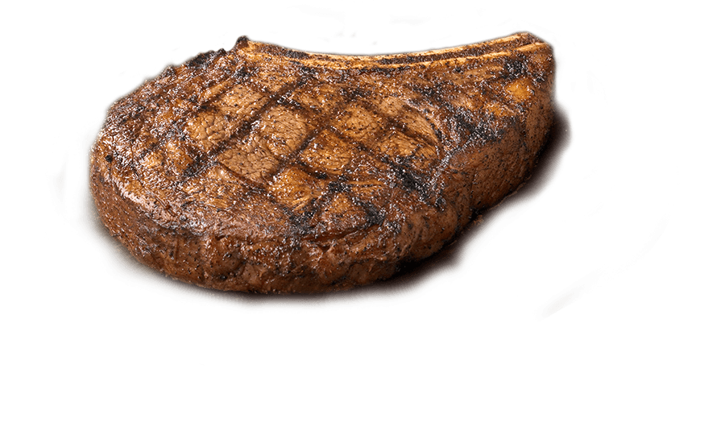

Steak
| Ingredients | Directions |
|---|---|
| 2 tablespoons butter, softened, divided | Mix 1 tablespoon butter, parsley, garlic and soy sauce. | 1/8 teaspoon salt | Sprinkle steak with salt and pepper. In a large skillet, heat remaining butter over medium heat. Add steak; cook until meat reaches desired doneness (for medium-rare, a thermometer should read 135°; medium, 140°; medium-well, 145°), 4-7 minutes per side. Serve with garlic butter. |
| 1 beef flat iron steak or boneless top sirloin steak (3/4 pound) | Cook in a pan or a couple of minutes |

| Ingredients | Directions |
|---|---|
| 1 1/2 cups all-purpose flour | In a large bowl, sift together the flour, baking powder, salt and sugar. Make a well in the center and pour in the milk, egg and melted butter; mix until smooth. | 1 1/4 cups milk | Heat a lightly oiled griddle or frying pan over medium high heat. Pour or scoop the batter onto the griddle, using approximately 1/4 cup for each pancake. Brown on both sides and serve hot. |
| 3 1/2 teaspoons baking powder | |
| 1 egg |
orange chicken

| Ingredients | Directions |
|---|---|
| 4 Boneless Skinless Chicken Breasts cut into bite-size pieces | cook several chicken pieces at a time. Cook for 2 - 3 minutes, turning often until golden brown. | 3 Eggs whisked | Whisk eggs in shallow dish. |
| 1/3 cup Cornstarch | Toss chicken with orange sauce. You may reserve some of the sauce to place on rice. Serve it with a sprinkling of green onion and orange zest, if so desired. |
| 1/3 cup Flour | Place flour and cornstarch in a shallow dish or pie plate. Add a pinch of salt. Stir. |
| 1 cup Orange Juice | |
| 1/2 cup Sugar | |
| 2 Tablespoons Rice Vinegar or White Vinegar | |
| 2 Tablespoons Soy Sauce use tamari for a gluten-free dish | |
| 1/4 teaspoon Ginger | |
| 1/4 teaspoon Garlic Powder or 2 garlic cloves, finely diced | |
| 1/2 teaspoon Red Chili Flakes | |
| Orange Zest from 1 orange | |
| 1 Tablespoon Cornstarch |